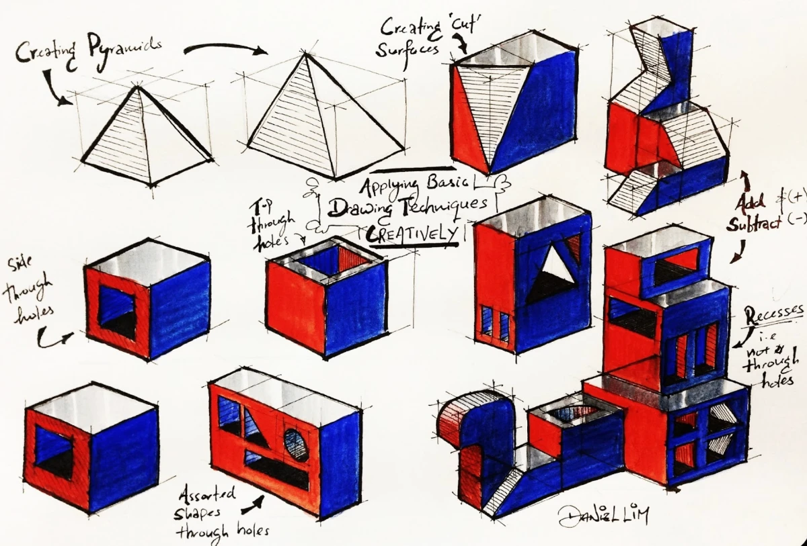
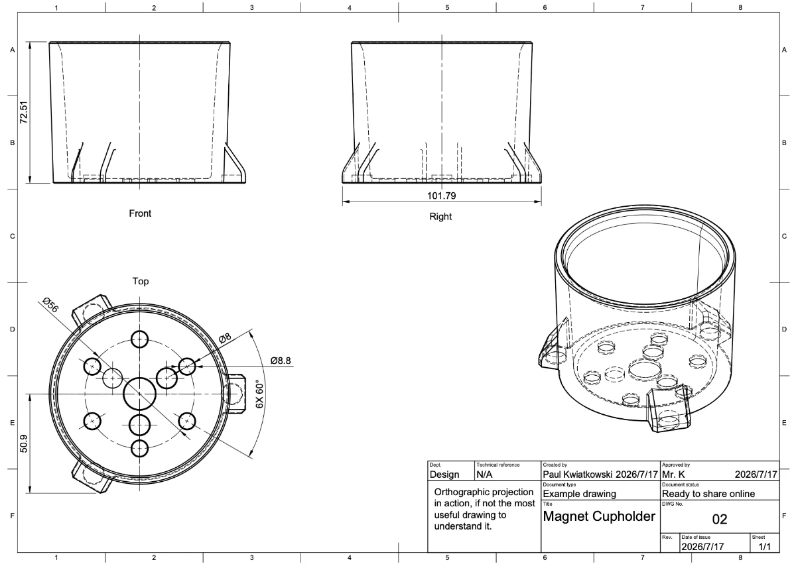
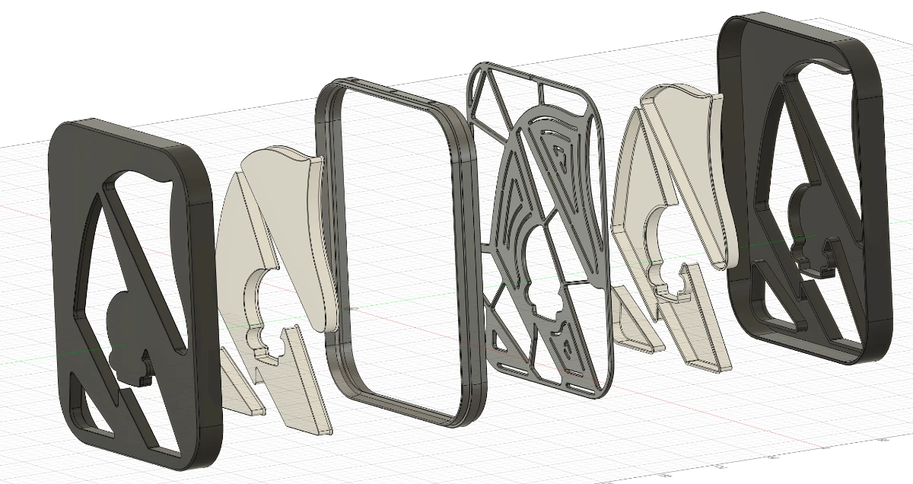
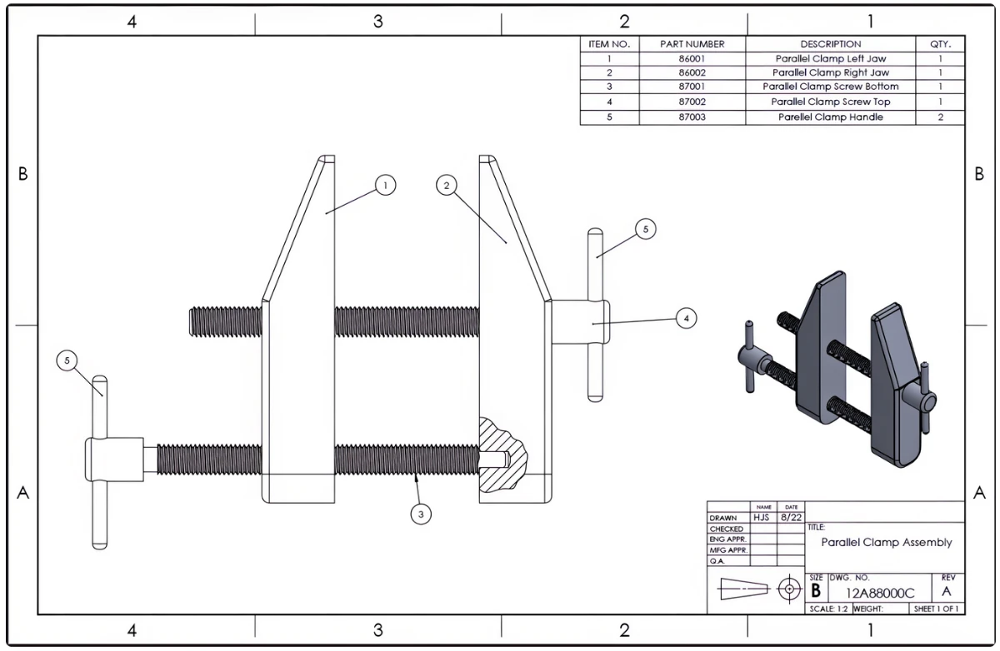
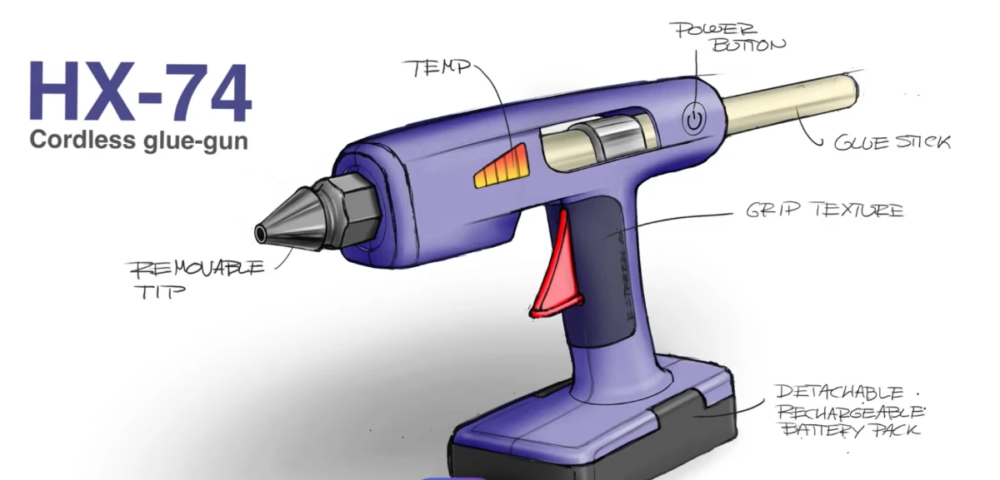
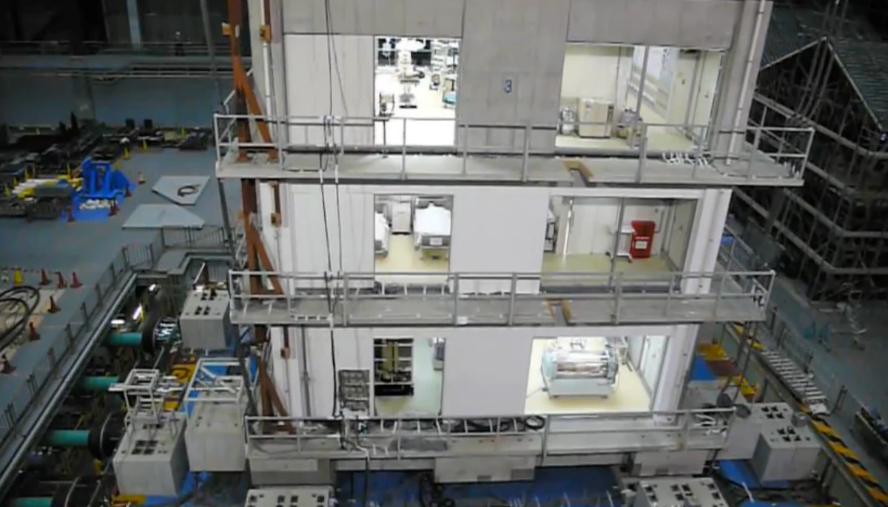

{kind=link}
{kind=link}
{kind=link}
{kind=link}
{kind=link}
{kind=link}
Airbus's Bionic Partition
A cabin wall redesigned by an algorithm inspired by slime mould.
Read case study →Guiding questionHow do designers communicate ideas to different stakeholders?
The guiding question for this topic is about communication, and that framing is the important part. A model is not a small version of a product. It is an argument aimed at a particular person. A client wants to know whether it is worth funding, a user wants to know whether they would use it, a manufacturer wants dimensions and tolerances, and an engineer wants to know whether it will hold. Handing all four of them the same render is how good ideas die in meetings.
So the assessable skill in B2.2 is less "can you make a prototype" and more "can you choose the right one and say why", building directly on the fidelity ideas from A2.2. Finite element analysis is worth flagging, since it is the point where modelling stops describing appearance and starts predicting behaviour. Being able to break something a hundred times in software before building it once has quietly changed how much risk designers can afford to take. Your IA will ask you to model and to justify what each model was for, so get in the habit of naming the audience before you start building.
Students must be able toConstruct and interpret 2D drawings and 3D models, including isometric, orthographic projection, assembly and exploded drawings.
Drawings are the most fundamental form of design communication: they allow designers to share ideas with manufacturers, engineers, clients and users without requiring physical models. Different drawing types serve different audiences and purposes:

Isometric drawings present an object from a corner viewpoint using 30° angles for all horizontal edges. The name comes from the Greek "equal measurement" because true dimensions are preserved along all three axes. Three sides of the object are visible simultaneously, making isometric drawings well suited for presentations to audiences with limited technical training.
Computer games have made use of an isometric perspective for years, first as a way to 'cheat' and have a game with flat drawings appear 3D, and later as a stylistic choice. Older strategy games such as Starcraft and Age of Empires are good examples of using flat art assets to appear 3D (see the screenshot above) while Hades is a modern example of a game that actually uses 3D assets but retains the isometric perspective.

Orthographic projection presents multiple 2D views (typically front, top and side) each projected perpendicularly onto a plane. Together, the views communicate exact dimensions, tolerances and surface specifications. This is the standard for manufacturing and engineering, and most of the time enough measurements and views are available for someone to create an accurate model from a set of orthographic views. (See CAD vs CAD on YouTube for a particularly fun example of orthographic projections being modeled.)

Exploded drawings show how components separate along their assembly axes so the viewer can understand how parts fit together. One of the earliest known examples was created by Leonardo da Vinci around 1478–1480. (See it and more on the Wikipedia page for exploded views.) This type of drawing is particularly useful for understanding complex assemblies and ensuring that all parts are correctly positioned.

Assembly drawings show how multiple components come together into a functional system or assembled part. They typically include a Bill of Materials (BoM), a numbered list of every part, and linked to callout labels on the drawing. Lego provide assembly instructions, but each page could be used as a small example of this, since they include the 'bill of materials' for that page, along with the assembled drawings and visual callouts showing where each part goes.

Perspective renderings use one or more vanishing points to create a realistic sense of depth. They do not preserve true dimensions but communicate the overall appearance and feel of a product convincingly to non-technical clients and investors. They're also a great excuse to use way more colors in your work.
Students must be able toConstruct and interpret aesthetic and functional prototypes at different levels of fidelity, including the considerations of scale, shape and space.
Physical prototypes exist on a spectrum of fidelity: how closely they match the final product in appearance, materials and function. Choosing the right fidelity for each stage of development is a critical design decision.
Low-fidelity prototypes (cardboard, foam, tape, paper) are fast and cheap to build. They test core concepts, spatial relationships and rough proportions without committing to materials or manufacturing. Dyson famously used cardboard models extensively during development of the DC08 vacuum. The "fail fast, fail cheap" principle applies: expose problems early when changes cost almost nothing.
Medium-fidelity prototypes have more accurate shape and proportions and may include some working features, but often use substitute materials (e.g., 3D-printed plastic instead of die-cast aluminium). They provide a useful balance between cost and realism for user ergonomic testing and stakeholder review.
High-fidelity prototypes use final materials and, ideally, final manufacturing processes. They generate meaningful performance data (task completion rates, error rates, satisfaction scores) that earlier prototypes cannot. Changes at this stage are costly, so the concept must already be well-validated before investing here.
Prototypes are also categorised by purpose:
Considerations of scale (is it 1:1 or reduced?), shape (are ergonomic dimensions accurate?) and space (does it fit its intended environment?) affect which prototype type is appropriate at each stage.
Students must be able toConstruct and interpret surface, solid and virtual models.
CAD (Computer-Aided Design) has become an integrated environment for ideation, refinement, simulation and communication. Rather than producing drawings alone, modern CAD platforms allow a single model to generate technical drawings, photorealistic renders, FEA simulations and manufacturing data.
CAD models fall into three main categories:
Generative design is an emerging CAD approach in which the designer supplies constraints (load conditions, material, manufacturing method, weight targets) and an algorithm explores thousands of design permutations, often producing organic lattice structures that no human would draw intuitively, yet which meet all specifications at minimum material weight. Depending on your specific CAD program you might be able to try using this feature, but note that it isn't typically free, and that it isn't necessarily suitable for 3D printing applications.
A cabin wall redesigned by an algorithm inspired by slime mould.
Read case study →Students must be able toInterpret the output from FEA.
Finite Element Analysis (FEA) is a computer simulation technique that predicts how a virtual model will behave under applied forces, heat, pressure or motion. The software divides the model into a mesh of small, simple elements (triangles or tetrahedra) and mathematically calculates stress, strain and displacement at every node in the mesh. Results are typically displayed as colour contour plots: regions under the highest stress appear red, low-stress regions appear blue.
Key failure modes FEA identifies:
FEA allows designers to test and refine virtual models without building physical prototypes, significantly reducing development cost and time. However, results are only as reliable as the mesh quality, material data and boundary conditions: garbage in, garbage out.
One thing the colours will never tell you: an FEA result is only as good as what the analyst told it. Bolt this bracket at one hole instead of two, refine the mesh, or swap the material, and the same geometry returns a different answer. The software makes none of those choices, which is why "the simulation says it is fine" is a claim you should always ask questions about.
Students must be able toConstruct and interpret CAD models suitable for rapid prototyping.
Rapid prototyping uses digital CAD models to produce physical objects directly, without manual machining or tooling. The three principal additive manufacturing processes are:
CAD model requirements for rapid prototyping: The model must be a watertight solid with no open surfaces, gaps or self-intersecting geometry. It is exported as an STL (stereolithography) file, which approximates curved surfaces as a mesh of triangles. Resolution (triangle count) must be high enough to preserve fine details. Wall thickness must meet minimum thresholds for the chosen process to avoid fragile or failed builds.
STEP, OBJ, and 3MF files may also be used, and offer additional features and compatibility. An example of meeting a minimum threshold is ensuring that model walls are thicker than the nozzle size on an FDM printer. For example, the machines we use at school have .4mm nozzles, so model walls must be at least 4mm thick, and in reality, they should be closer to 1mm to guarantee successful printing.
An STL file (the name comes from "stereolithography", the process it was originally created for) describes a 3D shape using only flat triangles. A curved surface, such as a sphere or a fillet, has no exact triangular equivalent, so the STL format approximates it: the more triangles used, the closer the faceted surface gets to the true curve, at the cost of a larger file and longer processing time.
This is the same trade-off that governs the mesh used in FEA simulation: a coarse mesh (or a low-triangle-count STL) is fast to process but blurs fine geometric detail, while a fine mesh captures detail accurately but takes longer to compute or print. Designers choose resolution based on what the model needs to show: a low-poly STL is fine for a rough proportion check, but a part with delicate curved features needs a high-resolution export to print correctly.

A full-size building on the world's largest shake table, destroyed on purpose.
Read spotlight →Students must be able toSelect and use appropriate drawings, physical prototypes and CAD models to gather relevant data and feedback, which can be used to analyse and develop the design iteratively.
No single prototype type is right for every audience or purpose. Selecting the appropriate modelling tool for each stakeholder group is a core design skill:
The iterative process means feedback from one stakeholder group informs the next prototype. A user session revealing grip problems triggers a shape change; the new shape is validated with FEA before a revised physical prototype is built. Matching prototype type to audience and question (not defaulting to the highest fidelity available) is what makes iteration efficient.
Hover, focus or tap a card for the full breakdown: purpose, audience and the data it actually gives you.
Ten questions covering drawing types, prototype fidelity, CAD modelling, FEA and rapid prototyping. Select one answer per question, then click "Check all answers" to see your score and the explanations.
Explain the difference between orthographic drawings and isometric drawings. Give one appropriate use for each.
Orthographic drawings show an object as a set of separate flat views, typically front, top and side, with each one projected straight onto its own plane at a right angle. All three views together communicate the exact three-dimensional form, with precise dimensions, tolerances and material specifications. The name reflects the perpendicular ("ortho") projection method. Orthographic drawings are most appropriate for manufacturers and engineers because they provide the dimensional accuracy and technical detail required for production.
Isometric drawings are a 3D pictorial style where an object is viewed from a corner, using 30° angles for all horizontal edges. The name comes from the Greek "equal measurement": actual dimensions are preserved along all three axes. Three sides of the object are visible simultaneously. Isometric drawings are most appropriate for presentations to clients and audiences with limited technical knowledge because they provide a recognisable sense of the object's form without perspective distortion.
Describe three different types of prototypes based on their purpose or audience. For each, explain what type of data it collects and who the target audience is.
1. Low-fidelity conceptual models (cardboard, foam, paper wireframes): Quick, simple representations used to explore early ideas and test basic proportions. The feedback gathered is mostly qualitative: how users react to the look and feel, first impressions of appearance, whether the idea reads clearly, and whether the basic layout works spatially. Target audience: the internal team and clients, who use these quick, low-cost models to iterate and agree on a shared direction before committing serious resources.
2. Functional prototypes (working versions using substitute materials or breadboard electronics): Demonstrate working mechanisms and performance at moderate fidelity. Data collected includes performance metrics (task completion rates, error frequency, reliability), technical data (tolerances, material behaviour under load), and user interaction data. Target audience: engineers and beta testers, who rely on these builds to confirm the design genuinely works and to catch hidden problems ahead of full-scale manufacturing.
3. High-fidelity aesthetic/visual prototypes (polished models using near-final materials, colours and finishes): Communicate intended appearance and brand identity. Data collected is largely qualitative: aesthetic feedback, emotional response, brand alignment and market appeal. Target audience: clients, marketing teams and investors to support funding pitches, promotional materials and strategic decision-making.
A design team is developing a new ergonomic computer mouse. They need to test hand fit, button click feel and surface texture. Compare the suitability of low-fidelity versus high-fidelity prototypes for this specific testing scenario.
Low-fidelity prototypes (carved foam, clay or rough 3D-printed shells) are fast and cheap to produce. They are well suited to testing basic hand fit and overall proportions because the team can iterate through many different shapes quickly. However, low-fidelity prototypes cannot accurately test button click feel (foam and clay do not replicate the tactile snap of a micro-switch) nor surface texture, because foam feels nothing like moulded plastic or a rubber grip. Users may give misleading feedback because the prototype does not match the sensory experience of the final product.
High-fidelity prototypes using final materials and manufacturing methods (for example injection-moulded ABS with the actual micro-switches and the intended soft rubber overmould) are ideal for testing click feel and texture because they exactly replicate the final product's tactile properties. However, high-fidelity prototypes are expensive and time-consuming to produce, and changes are difficult and costly.
Best approach: Use low-fidelity models to rapidly iterate on hand fit across many shape variations. Once the shape is validated, build a small number of high-fidelity prototypes with actual switches and final surface textures for a focused evaluation of click feel and grip texture. This phased strategy balances speed and cost at the exploration stage with accuracy at the validation stage.
Explain what Finite Element Analysis (FEA) is and how it helps designers improve product safety. Refer to the concept of "yielding" in your answer.
Finite Element Analysis (FEA) is a computer simulation technique that predicts how a virtual model will behave under applied forces, heat, pressure or motion. The software divides the model into a mesh of small elements and calculates stress, strain and displacement at every point, displaying results as colour contour plots: red indicates the highest stress, blue the lowest.
FEA improves product safety by identifying yielding before any physical prototype is built. Yielding marks the transition from elastic behaviour, where the material springs back to its original shape once load is removed, to plastic behaviour, where the shape change becomes permanent and stays even once the load is gone. For most structural components, yielding is unacceptable because the part will no longer function as intended.
For example, an FEA simulation of a mobile phone case dropped from 2 metres shows high-stress (red) regions at impact points. If calculated stress exceeds the material's yield strength in any region, the designer can add material, change the geometry (adding ribs or rounded fillets) or select a tougher material, all before investing in a physical prototype. This reduces both cost and safety risk.
Analyse how the choice of prototype fidelity (low, medium, high) affects resource allocation, user feedback quality and decision-making in product development. Use examples from the chapter.
Low-fidelity prototypes (cardboard, foam, paper) require minimal resources: hours to build, negligible material cost, and easy to discard. Dyson's extensive use of cardboard models during DC08 development is a clear example: cheap models allowed rapid iteration without financial risk. User feedback quality is limited to broad impressions of shape, proportion and concept direction. Detailed ergonomic data, surface texture evaluation or performance testing is not possible. Decision-making at this stage addresses broad questions: "Is this the right concept?" and "Which of these five approaches is worth developing further?"
Medium-fidelity prototypes have more accurate geometry and may include working features in substitute materials. Resource requirements are moderate: days to weeks and higher material costs. User feedback quality improves substantially: participants can evaluate grip comfort, basic usability and relative proportions meaningfully. Decision-making becomes more specific: "Does this button placement work for 5th–95th percentile users?"
High-fidelity prototypes use final materials and manufacturing methods. Resources are significant: weeks or months, tooling costs of thousands of dollars. User feedback quality is highest: participants experience exact look, weight, feel and performance. Task completion rates, error rates and satisfaction scores are now valid and comparable. Decision-making addresses launch readiness: "Does this product meet all specifications? Are we ready to commit to production tooling?"
The strategic insight is in the transition: explore broadly and cheaply with low fidelity, narrow down with medium fidelity, then validate precisely with high fidelity. This minimises total investment while maximising confidence at each decision point.
| Fidelity | Cost | Build time | Feedback quality | Key decision |
|---|---|---|---|---|
| Low | $ | Hours–days | Basic: concept, proportion | Right direction? |
| Medium | $$ | Days–weeks | Good: ergonomics, usability | Right form? |
| High | $$$ | Weeks–months | Excellent: full validation | Ready to launch? |
Linking Questions